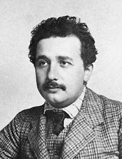

Albert Einstein was born in the Kingdom of Württemberg in the German Empire on 14 March 1879. His parents were Hermann Einstein, a salesman and engineer, and Pauline Koch. In 1880, the family moved to Munich, where Einstein's father and his uncle Jakob founded Elektrotechnische Fabrik J. Einstein & Cie, a company that manufactured electrical equipment based on direct current.
